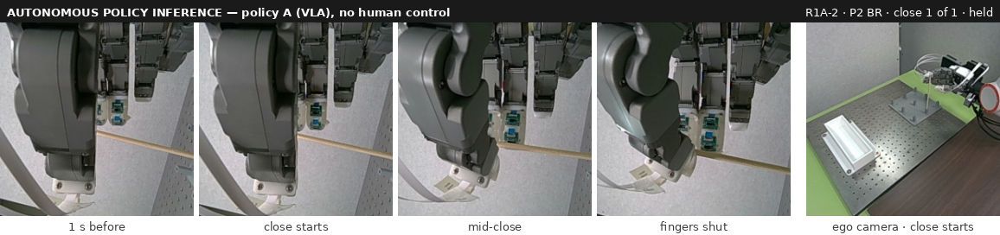
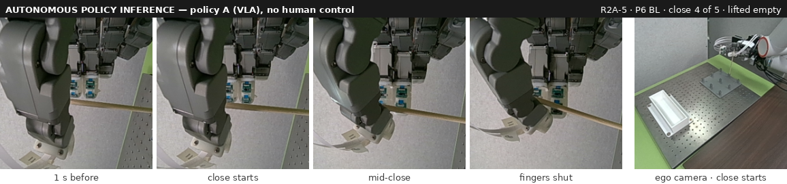
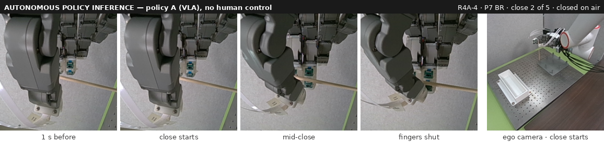

The robot finds the chopstick, then misses the last centimetre
Policy A (round 4, vision only, trained with corrective teleop demonstrations) found the correct socket in 26 of 28 robot trials and placed the chopstick in the white container in 18. When its grasp misses, the fingers shut about 1 cm short of the chopstick — an error the palm ToF sensor sees but A never reads.
29 September – 6 October 2026
What changed since 28 September
- Corrective teleop demonstrations, a key reason policy A succeeds more often: the round-3 data adds lateral adjustments and regrasps to the clean grasps (videos below). Round 4 trains on 82 clean, 58 lateral-adjustment and 58 regrasp episodes.
- New ego camera view, diagonal from above; both cameras give the policy an undistorted square crop, in data collection and on the robot.
- Policy A (cameras + arm and hand state) beat round-4 variants B and C on 5 October (placed 3 and 4 of 7; B 1, C 0), so it got all 28 trials.
Corrective teleop demonstrations
Recorded by a human with the glove on 6 October (socket P4, corner FR), the same way as the round-3 training data. These are not policy runs. Each is shown from the front and from above; the top view shows the lateral misalignment at the end of the coarse approach.
Lateral adjustment: too far
Teleop demonstration — a human controls the robotLateral adjustment: too close
Teleop demonstration — a human controls the robotRegrasp: too far
Teleop demonstration — a human controls the robotRegrasp: too deep
Teleop demonstration — a human controls the robot5–6 October 2026
28 robot trials of policy A
| Policy A | All 28 trials, 5–6 Oct |
|---|---|
| Overall success (grasped and placed in the white container) | 18 of 28 (64 %) |
| Correct socket | 26 of 28 (93 %) (1 unclear, 1 wrong) |
| Correct hand placement during the first close | 12 of 28 (43 %) |
| Trials that needed regrasps | 14 of 28 (50 %) (45 regrasps) |
| Hand or thumb bent or struck the chopstick | 6 of 28 (21 %) |
Checkpoint 55109; 7 trained sockets × 4 chopstick corners, one trial each. First-close placement = the first close lifted the chopstick out of the socket (pre-registered for 6 October; defined after the trials for 5 October).
- The policy found the correct chopstick socket position in 26 of 28 trials.
- The grasp is the weak step: the first close held the chopstick in only 12 of 28.
A clean first grasp
A long regrasp search
Contact: the thumb bends the chopstick
Offline analysis of the 28 trials, 6 October
How it fails: the hand stops moving forward as the fingers close
- The miss happens in the last centimetre. When a grasp works, the hand keeps moving forward while the fingers close, like the demonstrations. When it misses, the hand stops moving forward and the fingers close about 1 cm short of the chopstick. Starting the close in the right place does not fix this (on target at the start: 7 of 21 closes that held, 25 of 47 that missed).
- Retries do not get closer. The next attempt started farther from the chopstick in 23 of 41 retries. The policy abandoned 16 of 68 closes halfway (the demonstrators never did) and sometimes hovered 2–3 cm away for up to 25 s. Each time the thumb bent the chopstick, the hand had first gone 3–9 cm past it.
Teleop demonstrations 81 closes · median −11.6 mm · moved 11.2 mm forward while closing
Policy A: closes that held the chopstick 21 closes · median −11.1 mm · moved 9.6 mm forward while closing
Policy A: full closes that missed 31 closes · median −0.4 mm · moved 5.9 mm forward while closing
Reach-axis position of the hand when the fingers finished closing (mm). 0 = where the demonstrator typically starts closing at that socket and corner.
One mark per close. Grey band: where 95% of the demonstrators' closes finished. Not shown: A's 16 abandoned closes.
Recorded during R3A and R4A (14 trials); policy A never reads it
What the hand's ToF sensors saw
- The palm sensor sees how far short of the chopstick the hand stopped — the error behind A's misses. Each dot is one close of policy A (37 closes): when the hand stopped short, the palm sensor saw the chopstick near the top of its image; when the hand went past it, near the bottom. Policy A never reads this sensor; the VPLA does.
- Limits: one snapshot at the start of a close does not predict success, and once the fingers close, the palm sensor cannot tell whether the chopstick is in the hand.
the chopstick, nearer = stronger (up to 150 mm) the hand's own fingers (always in view)
one close of policy A (37 in all)one trial's 9 attempts, in order (R4A P8 BL)the attempt that held
Images: the palm sensor at the start of attempts 3, 9 and 7 of trial R4A P8 BL (numbered in the plot). 0 mm = where the demonstrators typically begin to close. Rows of the palm image: 0 = top, 15 = bottom, 7–8 = its centre.
6–7 October 2026
Next: does the VPLA use the ToF?
Is the ToF needed during the close? The wrist camera already sees the chopstick
Before training the VPLA to lean on the ToF at the close, we looked at what the wrist camera shows there. We went through every close of the 28 trials frame by frame: in all 47 closes that did not hold the chopstick, and in the 8 of 21 successful closes we sampled, the lower part of the chopstick stays in view from 1 s before the close until the fingers are shut. The strips below are exactly what policy A received: 224 × 224 pixels at their native size.
How to read the wrist image: the camera is rolled about 90°. The chopstick is the tan bar running from the hand to the right edge; the thumb is the grey shape on the left and the fingertips are at the top. The chopstick's tip is hidden behind the thumb, and its foot in the socket is beyond the right edge once the hand is at grasp height.



What this means for the ToF
- The camera already shows the error. In both misses above the 1–2 cm offset is visible in the wrist image by eye, and the camera can see the chopstick touch the middle fingertip, because the thumb is the only digit on the far side. This fits two earlier offline results: a ToF-reading policy trained on the demonstrations learned to read the ToF but did not improve (7 October), and policy A's remaining end-of-approach error on held-out demonstrations could not be predicted from the ToF (6 October). For this close, the ToF may be redundant with the wrist camera.
- Where the grasp fails: the last fine alignment. In R2A-5 (P6 BL) and R4A-4 (P7 BR) the fingertips appear to make solid contact with the chopstick, yet in both the chopstick sat a little too far toward the palm and the grasp failed. This final adjustment of the hand against the chopstick, at the moment of contact, is where the ToF sensors could make the difference between success and failure.
- What the ToF could still add: metric depth. The ToF measures distance directly, while the image shows distance along the camera's line of sight mainly through how thick the chopstick looks, a much weaker cue. Whether that extra precision matters in the last centimetre is the open question. (The ego camera shows the chopstick only as a faint line 1–3 pixels wide.)
All 28 trials of policy A, as videos (4× speed)
Every clip is an autonomous run of policy A with no human control; the operator only starts the trial, scores it and may stop it. Videos load only when played.